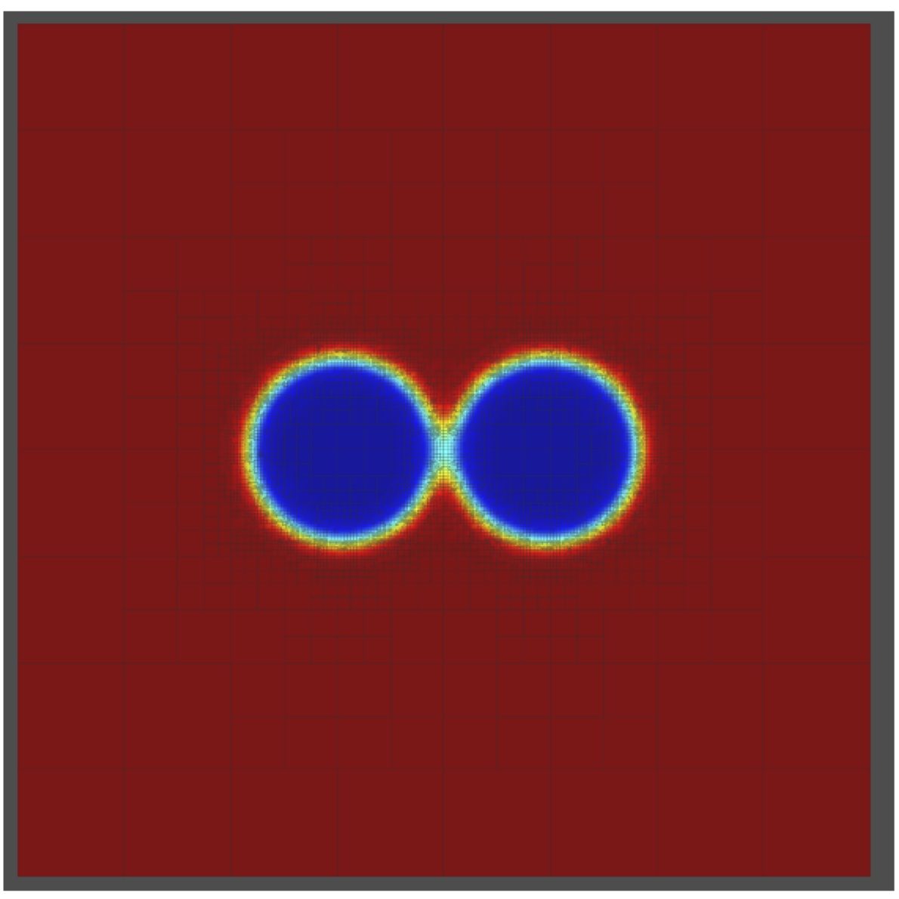
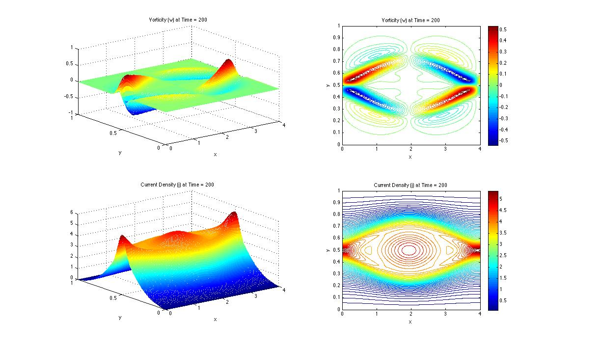
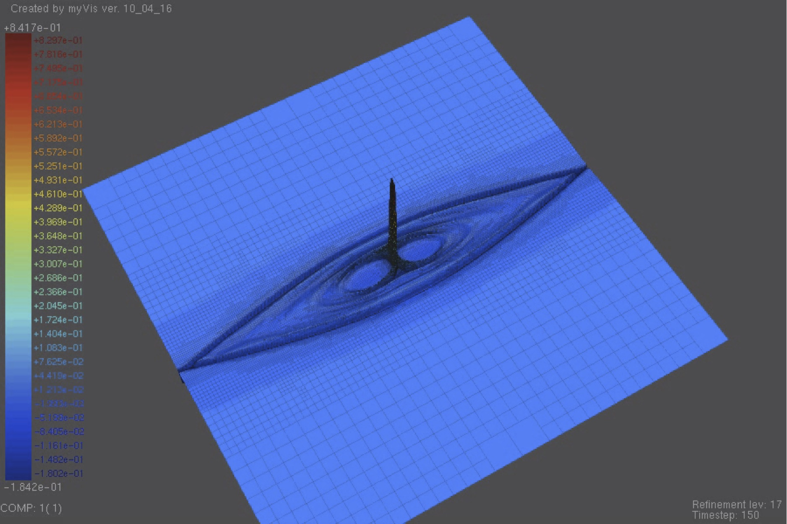

Research Interests
My research interests are in the area of scientific computing, with a focus on
computational partial differential equations and variational problems. Specific applications
include plasma physics, solid-mechanics, liquid crystals, porous media,
and other complex fluid and electromagnetic
problems. I am interested in both physical modeling as well as numerical computation
using various finite-element methods and multigrid.
Here is a list of my Publications.
and here are some "cool", but now somewhat dated movies of my past research.
Software
Together with
Xiaozhe Hu (Tufts) and
Ludmil Zikatanov (Penn State), I am one of the authors of
HAZmath: A Simple Finite Element, Graph, and Solver Library, which provides basic finite element and graph routines.
PhD Students
Current Students
- Satchel Lefebvre
- Eoghan O'Keefe
- Kate Wall
- Zhongqin Xue
A list of the PhD students that I have advised or co-advised in the past is found on the
Mathematics Genealogy Project.
Computational and Applied Mathematics Seminar
Each semester, I help co-organize a research
seminar with graduate students and faculty on computational and applied mathematics.
The meetings can be informal, but often include an invited speaker. See website for more details.